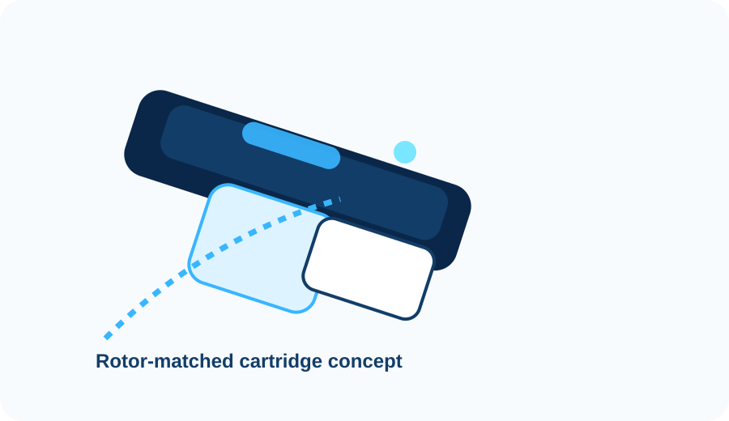

High-throughput centrifugal membrane screening for NF and RO workflows.
CentrivaLab translates the O-CMF principle into a scalable product platform for rapid membrane evaluation inside standard laboratory centrifuges, without external pumps or pressurisation hardware.
Current lead configuration
CentrivaLab 50/34 is the reference cartridge for 50 mL conical tubes and fixed-angle rotors around 34°, intended for fast screening of NF/RO membranes under well-defined centrifugal pressure conditions.
Technology
The Orthogonal Centrifugal Membrane Filter (O-CMF) principle converts rotor angular velocity into transmembrane pressure. This enables compact membrane screening workflows directly inside centrifuge infrastructure already available in many laboratories.
Why the platform matters
- Eliminates external pumps and pressure-control hardware for many screening workflows.
- Creates rotor-matched cartridges that are easier to position and benchmark experimentally.
- Supports low-volume membrane evaluation with clearer control of centrifugal hydrostatics.
- Provides a scalable architecture for future cartridge families and compatibility notes.

Available configurations
CentrivaLab 50/34
Reference cartridge designed for 50 mL conical tubes and fixed-angle rotors around 34°.
- Nominal feed volume: 13 mL
- Equivalent pressure: 2–60 bar
- Rotor speed range: 3,000–20,000 rpm
- Target use: NF/RO membrane screening
CentrivaLab 94/25
Next platform configuration for alternative rotor geometry and expanded workflow coverage.
- Configuration architecture already reserved
- Commercial naming aligned with platform rules
- Suitable for future product-line expansion
Public specification page can be activated later without restructuring the website.
Why not just use crossflow or stirred cells?
CentrivaLab is not a universal replacement for every filtration rig. It is a focused screening platform designed to simplify early membrane evaluation and reduce infrastructure burden for specific NF/RO workflows.
| Criterion | CentrivaLab | Crossflow rigs | Stirred cells |
|---|---|---|---|
| Pressure generation | Centrifugal hydrostatics | External pump system | Compressed gas or pressure vessel |
| Infrastructure burden | Low | High | Moderate |
| Rotor matching | Yes | No | No |
| Screening convenience | High for targeted workflows | High flexibility, higher setup burden | Simple but less rotor-native |
| Scalability of cartridge family | Platform-based | System dependent | System dependent |
Materials and documentation strategy
Materials
Wetted-material selections and compatibility notes belong in dedicated specification pages, not buried in marketing text.
Specifications
Each product page links to a technical specification page that acts as the authoritative public technical source.
Scalability
New products can be added under the same navigation logic without rebuilding the website architecture.
Contact
Discuss a screening workflow
Use the contact page to discuss rotor model, target pressure range, tube format, membrane type and application.
Open contact pageSupport due diligence
The site structure is intentionally disciplined so that products, specifications and documentation can function as a lightweight commercial data room for partners and acquirers.